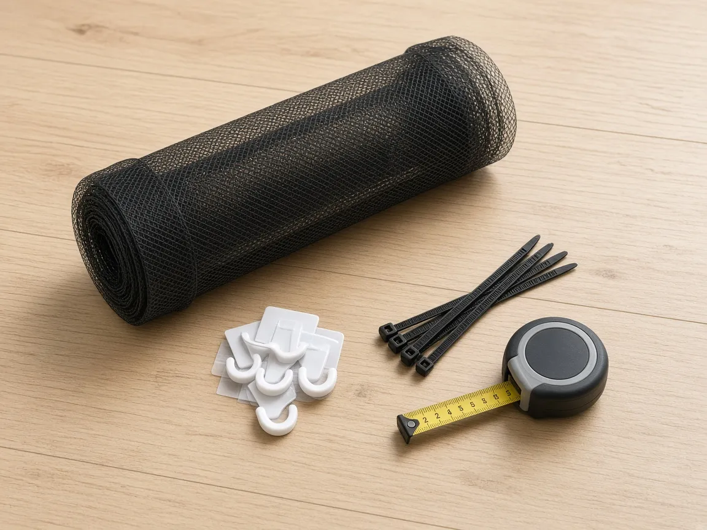
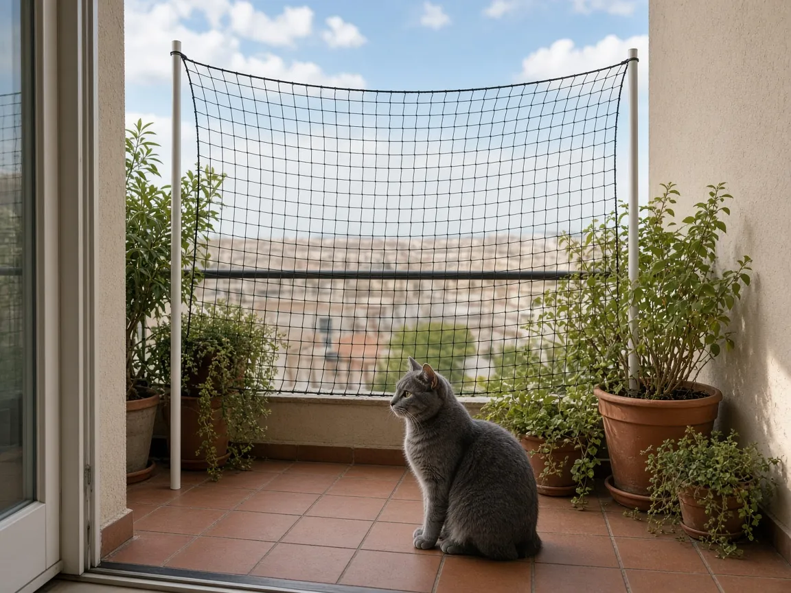
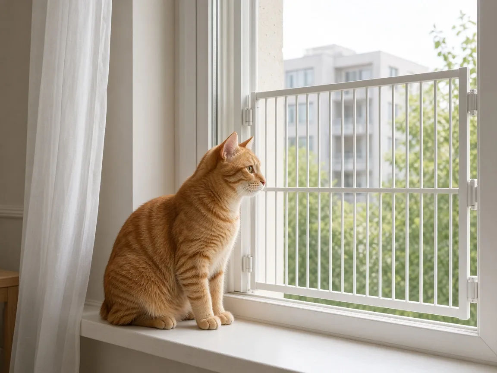

Filet de protection balcon pour chat : lequel choisir en appartement ?
Un chat d’appartement adore le balcon : air frais, oiseaux, soleil. Mais un oiseau qui passe ou un bruit soudain suffit pour qu’il saute ou glisse de la rambarde, même s’il est d’habitude prudent. La solution la plus simple pour en profiter sans stress, c’est un filet de protection. Voici les trois options qui marchent le mieux en appartement, locataire ou propriétaire, et ce qu’il faut vérifier avant d’acheter.
Les 4 points à vérifier avant d’acheter
- La maille : une maille d’environ 3 cm empêche le chat de passer la tête. Au-delà, il peut s’y coincer ou s’y faufiler.
- La matière : nylon ou polyéthylène traité anti-UV, pour qu’il ne devienne pas cassant après un été au soleil. Un fil renforcé résiste mieux aux griffes.
- La couleur : noir ou transparent. Le noir se voit moins de l’intérieur et abîme moins la vue.
- La fixation : chevilles, crochets adhésifs ou poteaux télescopiques. Si tu es locataire, vérifie ton bail ou le règlement de copropriété avant de percer.
1. Le filet anti-chute en rouleau

Pour fermer tout le balcon, du sol au plafond
C’est la solution la plus complète et la moins chère au mètre carré. Le filet se vend souvent en kit (filet, crochets, cordelette, colliers de serrage) dans plusieurs dimensions, par exemple 3 × 2 m ou 6 × 3 m. Mesure largeur et hauteur de ton balcon et prends un peu plus large : tu pourras toujours couper. Le filet doit monter jusqu’au plafond ou au balcon du dessus, sinon un chat déterminé passera par le haut.
Voir sur Amazon – filets de protection2. Le kit avec poteaux télescopiques sans perçage

Pour les locataires qui ne veulent pas percer
Des poteaux réglables se bloquent entre le sol et le plafond du balcon, puis le filet s’accroche dessus. Rien à percer, et tout se démonte au déménagement. Vérifie la hauteur maximale des poteaux (souvent jusqu’à 2,5 ou 3 m) et la présence d’embouts antidérapants. C’est un peu plus cher qu’un filet seul, mais c’est l’option la plus propre en location.
Voir sur Amazon – kits avec poteaux3. La grille de fenêtre pour chat

Pour aérer sans balcon
Pas de balcon, mais des fenêtres que tu ouvres souvent ? Une grille extensible se cale dans l’encadrement et laisse passer l’air. C’est aussi la bonne solution pour les fenêtres oscillo-battantes, dans lesquelles un chat peut se coincer : il existe des grilles en forme de triangle prévues pour ces ouvertures. Choisis un modèle en métal plutôt qu’en plastique fin.
Voir sur Amazon – grilles de fenêtreQuelle solution pour quel logement ?
| Situation | Solution conseillée | Point d’attention |
|---|---|---|
| Propriétaire, grand balcon | Filet en rouleau fixé avec chevilles | Fermer jusqu’au plafond |
| Locataire | Kit avec poteaux télescopiques | Hauteur maximale des poteaux |
| Pas de balcon | Grille de fenêtre | Bien mesurer l’ouverture |
| Fenêtre oscillo-battante | Grille triangulaire spéciale | Modèle adapté à la largeur |
Bien installer le filet
- Tends-le bien : un filet trop mou fait un hamac où le chat peut grimper.
- Ne laisse aucun espace de plus de quelques centimètres sur les côtés, en bas et en haut.
- Range ce qui pourrait servir de marchepied (chaise, jardinière haute) loin des bords.
- Contrôle l’état du filet chaque printemps, surtout les points d’attache.
- Ajoute de quoi profiter du balcon : un coussin, un point d’eau ou une fontaine à eau près de la porte-fenêtre, et quelques plantes non toxiques pour les chats.
FAQ
Mon chat est très prudent, un filet est-il vraiment utile ?
Oui. Même un chat calme peut sauter sur un insecte ou un oiseau, ou glisser d’une rambarde humide. Le filet est une précaution simple et peu coûteuse.
Ai-je le droit d’installer un filet sur mon balcon ?
Un filet discret est généralement toléré, mais le règlement de copropriété peut encadrer l’aspect extérieur de la façade. En location, un kit sans perçage évite les discussions. En cas de doute, demande d’abord au syndic ou au propriétaire.
Le chat peut-il déchirer le filet ?
Un filet de qualité en fil renforcé résiste aux griffes du quotidien. Un chat qui s’acharne dessus peut l’user à la longue : inspecte-le régulièrement et propose-lui un griffoir ou un arbre à chat pour se défouler ailleurs.
Et si mon chat s’échappe quand même ?
Un traceur sur un collier de sécurité aide à le retrouver vite. Vois notre guide GPS chat sans abonnement.
Notre avis
Si tu es locataire, le kit avec poteaux télescopiques est le meilleur compromis : sûr, sans perçage, démontable. Propriétaire avec un grand balcon, le filet en rouleau fixé solidement revient moins cher. Sans balcon, une grille de fenêtre suffit pour aérer tranquille. Pour équiper le reste de l’appartement, vois notre Top 5 des équipements 2026.
Pas encore prêt à acheter ? Commencez par notre audit gratuit en 1 jour (PDF).
Liens affiliés Amazon — nous pouvons toucher une commission sans surcoût pour vous.